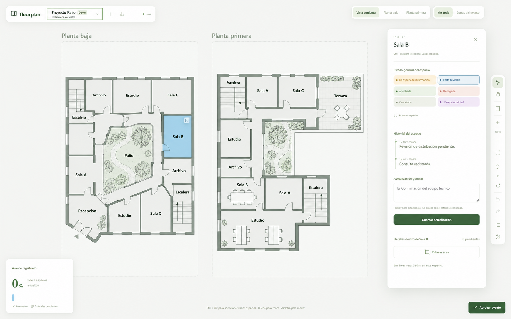
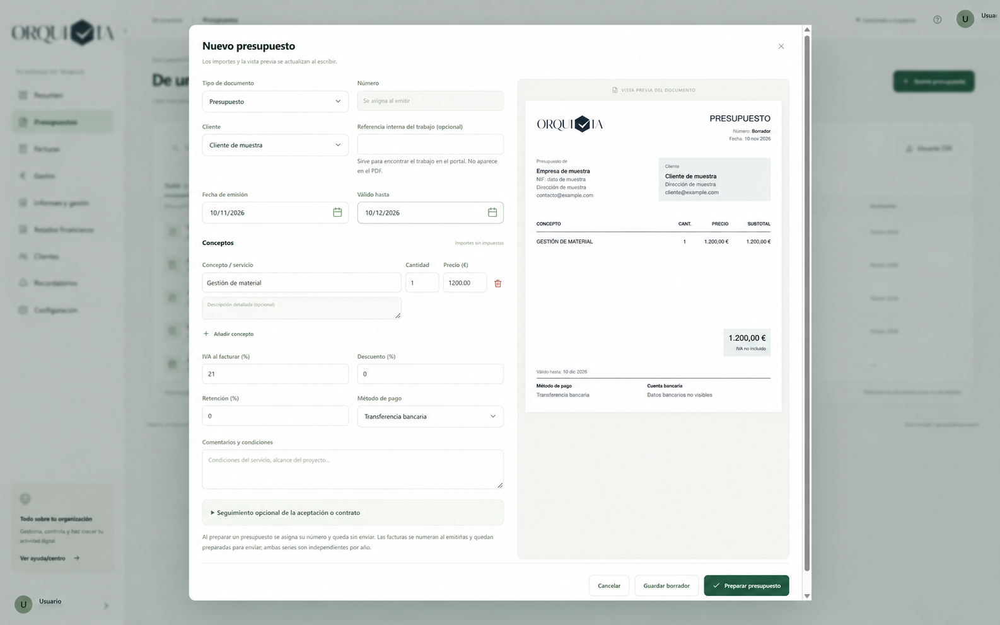

La necesidad
Hojas, correos y conversaciones que no recogen bien las particularidades del trabajo.
Aplicaciones a medida
Creamos apps para la gestión del despacho y el seguimiento de proyectos: presupuestos, gastos o consultas visuales desde un plano. Automatizamos pasos y conectamos las plataformas que utiliza tu equipo.
Hojas, correos y conversaciones que no recogen bien las particularidades del trabajo.
Apps de presupuestos, facturas y gastos, o consultas visuales de proyectos, adaptadas al proceso actual.
Una aplicación desarrollada para crear y seguir consultas directamente desde un plano.
Automatizaciones y conexiones entre plataformas, según sus capacidades y permisos.
La consulta o el dato necesario
Proyecto, documento y estado
El siguiente paso, visible
Aplicaciones desarrolladas
Aplicaciones desarrolladas para seguir consultas, coordinar trabajos y preparar documentos de gestión. Vistas de muestra adaptadas para proteger la información de cada proyecto.

Una aplicación para crear y seguir consultas visualmente desde un plano. El proyecto como punto de partida para localizar el seguimiento.

Preparación de presupuestos con una vista previa del documento. Una de las aplicaciones desarrolladas para gestionar presupuestos, facturas y gastos.
Empezamos por escucharte
En 15 minutos situamos una tarea concreta y el resultado que buscas. No hace falta preparar una presentación ni explicar toda tu empresa.
Exploremos tu proyecto